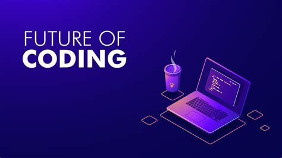

THE JOURNEY TO WEB PROGRAMMING
Home
About
Project
Gallery
PERSONAL STRUGGLES
.jpg)
My journey to web programming began with learning
the foundations of HTML, CSS, and JavaScript,
which took around 1-3 months, and then I moved
on to front-end development using frameworks
like React, Angular, or Vue.js, which took
another 3-6 months. After that, I delved into
back-end development using server-side programming
languages like Node.js, Python, or Ruby, and
learned about databases, API design, and implementation,
which took around 3-6 months. Next,
I integrated my front-end and back-end skills to
become a full-stack developer, learning about authentication,
authorization, deployment, and scaling, which took another 3-6 months.
Finally, I specialized in a specific domain, learned advanced
topics like web performance optimization and security,
and continued learning and growing as a web programmer.
FREECODE CAMP
.jpg)
My journey with FreeCodeCamp has been an incredible learning experience
. I started with the basics of web development, including HTML, CSS,
and JavaScript. As I progressed through the curriculum, I gained
hands-on experience with projects and challenges that tested my skills.
HOSTING A PROJECT ON A WEBSITE

The interactive coding environment and real-world projects
helped me retain information and apply my knowledge in
practical ways. I also appreciated the supportive
community and feedback from mentors, which kept me motivated and on track.
Through FreeCodeCamp, I've gained a solid foundation in web development and
a portfolio of projects to showcase my skills. I'm grateful
for the opportunity to learn and grow with this amazing platform."
TEXTING YOUR PROJECT
.jpg)
THE journey to web development has been good so far.Using freecodecamp
has really helped me to know how to code some various
instructions styling and knowing some basic principes
needed in creating websites and hosting them.....
My journey to becoming a web developer from scratch without a CS degree wasn't easy .
Today I’m going to fill you in on what went right, and what didn’t, so that if you’re
embarking on this journey,
you’ll have better luck than I did.
ORDERED LIST
- Gideon Samuel Twum 1703831669
- KWARTENG MICHAEL LARTEY 1706543562
- ERNEST GOHOHO
- AMAGLO JOSHUA
- JEREMIAH TETEH